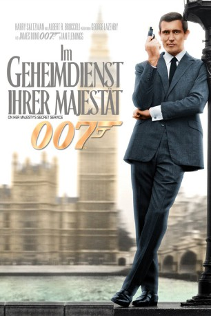

#260 James Bond 06 - George Lazenby - Im Geheimdienst Ihrer Majestät
Alternativ: On Her Majesty's Secret Service
 
 IMDB-Wertung: 6.8 / 10
IMDB-Wertung: 6.8 / 10  Metascore: 61
Metascore: 61 
Im Urlaub kann James Bond die junge Tracy Draco gerade noch davon abbringen, sich umzubringen. Ihr Vater, ein mächtiger Gangsterboss macht daraufhin 007 ein Angebot. Er erhält wichtige Informationen über seinen Erzfeind Blofeld, sollte er Tracy heiraten.
Jahr: 1969
Dauer: 142 Minuten
FSK: 16
Land: England Studio: United ArtistsTonspuren: DTS - ,
Untertitel: Deutsch, Englisch,
Auflösung: 1080p (1920×818) Größe: 17715 MB
Genre: Action, Abenteuer, Thriller
Regisseur: Peter R. Hunt
Drehbuch: Simon Raven, Richard Maibaum, Ian Fleming
Soundtrack: John Barry
Darsteller:
- George Lazenby als James Bond
 Diana Rigg als Tracy
Diana Rigg als Tracy Telly Savalas als Blofeld
Telly Savalas als Blofeld Gabriele Ferzetti als Draco
Gabriele Ferzetti als Draco Lois Maxwell als Moneypenny
Lois Maxwell als Moneypenny George Baker als Sir Hilary Bray
George Baker als Sir Hilary Bray Bernard Lee als 'M'
Bernard Lee als 'M' Desmond Llewelyn als 'Q'
Desmond Llewelyn als 'Q'- Virginia North als Olympe
- Catherine Schell als Nancy
 Joanna Lumley als The English Girl
Joanna Lumley als The English Girl- Honor Blackman als Pussy Galore , archive footage, uncredited
 Judy Geeson als Allergy Patient Piz Gloria , uncredited
Judy Geeson als Allergy Patient Piz Gloria , uncredited- Bessie Love als American Guest , uncredited
 Luciana Paluzzi als Fiona Volpe , archive footage, uncredited
Luciana Paluzzi als Fiona Volpe , archive footage, uncredited- Ilse Steppat als Irma Bunt
- Bernard Horsfall als Campbell
- Yuri Borienko als Grunther
- Geoffrey Cheshire als Toussaint
- Irvin Allen als Che Che
- Terence Mountain als Raphael
- John Gay als Hammond
- James Bree als Gebrüder Gumbold
- Angela Scoular als Ruby
- Julie Ege als The Scandinavian Girl
- Mona Chong als The Chinese Girl
- Sylvana Henriques als The Jamaican Girl
- Sally Sheridan als The American Girl
- Zaheera als The Indian Girl
- Anouska Hempel als The Australian Girl
- Ingrid Back als The German Girl
- Helena Ronee als The Israeli Girl
- Jenny Hanley als The Irish Girl
- David Brandon als Piz Gloria Guard , uncredited
- George Cooper als Waiter , uncredited
- Leslie Crawford als Waiter , uncredited
- John Crewdson als Draco's Helicopter Pilot , uncredited
- David de Keyser als Draco , uncredited
- Takis Emmanuel als Kleff , uncredited
- Thomas Gould als Blofeld's Man , uncredited
 Richard Graydon als Draco's Driver , uncredited
Richard Graydon als Draco's Driver , uncredited- Brian Grellis als Aide to Sir Hilary Bray , uncredited
- Reg Harding als Waiter , uncredited
- Peter R. Hunt als Man Reflected in Universal Export Sign , uncredited
- Dudley Jones als Hall Porter , uncredited
 George Leech als Strangled SPECTRE Skier , uncredited
George Leech als Strangled SPECTRE Skier , uncredited- Martin Leyden als Chef de Jeu Hussier , uncredited
- Norman McGlen als Janitor , uncredited
- Bill Morgan als Kleff, Draco's Man , uncredited
- Willy Oehrli als Piz Gloria Guard , uncredited
Datei: X:\7+mehr(A-Z)\007 James Bond\James Bond 06 - George Lazenby - Im Geheimdienst Ihrer Majestät (1969, FSK16, 1920x818).mkv seit 15.02.2015
Festplatte: HD Collection-7+mehr(A-Z)+Person
 Es gibt insgesamt 28 Filme in der Gruppe '7+mehr(A-Z)\007 James Bond'
Es gibt insgesamt 28 Filme in der Gruppe '7+mehr(A-Z)\007 James Bond'